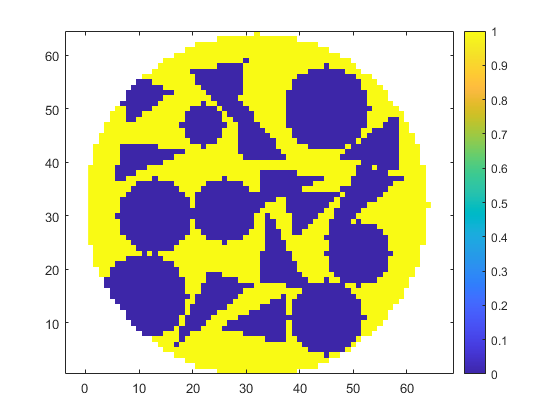
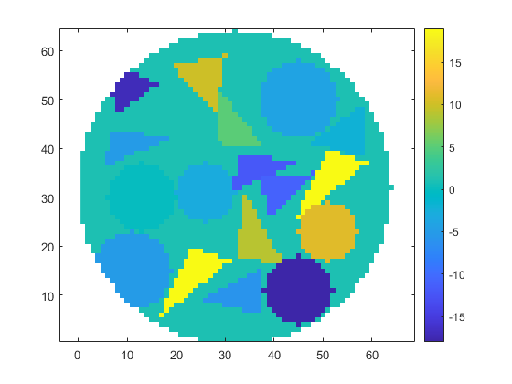

Contents
- Draw circular and triangular targets with random positions inside a circle without overlap
- Create a logical image of a circle with specified diameter, center, and image size.
- User-defined parameters
- Generating the targets
- Shape definition
- Positioning targets inside the circle and attributing values
- Results back to 64x64 images
- Binary mask visualization
- Resulting targets visualization
Draw circular and triangular targets with random positions inside a circle without overlap
clear
clc
close all
Create a logical image of a circle with specified diameter, center, and image size.
Based on https://matlab.fandom.com/wiki/FAQ#How_do_I_create_a_circle.3F
%Image parameters imageSizeX = 64; %works for square images imageSizeY = 64; [columnsInImage, rowsInImage] = meshgrid(1:imageSizeX, 1:imageSizeY); dimension = 2; % Circle parameters. centerX = 32; centerY = 32; radius = 32; %Calculating circle points circlePixels = (rowsInImage - centerY).^2 + (columnsInImage - centerX).^2 <= radius.^2; %Converting from logical to double and displaying vq = double(circlePixels); vq((vq==0)) = NaN; % We don't want objects outside of the circle
User-defined parameters
it = 1; %number of simulations samples = zeros(it,imageSizeX,imageSizeY); %initialize tensor to store the results % Next: Do not define both 'number' and 'mask_side' as large numbers % The code won't find a solution % Choose the number of targets inside the circle number = randi([26 26],it,1); %For a fixed number, use [n n] as the first randi argument % Choose the size of the mask where the shapes are defined mask_side = randi([12 18],it,1); mask_side = mask_side + mod(mask_side,2); % To force an even value % Choose a pixel value to limit the region of the targets limit = 8; %must be an even number % Target values scale max_val = 50; min_val = -50; delta_val = max_val - min_val; %Target vales max_target_val = 20; min_target_val = -5; %Time Counter tic
Generating the targets
for i = 1:it
Shape definition
A = zeros(mask_side(i),mask_side(i),number(i));
% Calculate 'i' triangular and circular masks
[A1] = mask_triangles(A, number(i), dimension, mask_side(i));
[A2] = mask_circles(A, number(i), dimension, mask_side(i));
% Selecting random shapes
sorteio1 = randi([1 2], number(i), 1); %if you want just one shape, let randi([n n],...)
sorteio2 = randi([1 number(i)], number(i), 1); %this is necessary to use different shapes
for j = 1:number(i)
if sorteio1(j,1) == 1
A(:,:,j) = A1(:,:,sorteio2(j,1));
elseif sorteio1(j,1) == 2
A(:,:,j) = A2(:,:,sorteio2(j,1));
end
end
clear A1 A2
Positioning targets inside the circle and attributing values
position %see attached file % figure; imagesc(matrix); colorbar % figure; imagesc(matrix2); colorbar
Success
Success
Success
Success
Success after some tries
3
Success after some tries
1
Success after some tries
2
Success after some tries
12
Success
Success after some tries
115
Success after some tries
14
Success after some tries
26
Failed, target lost
Success after some tries
71
Success after some tries
56
Success after some tries
84
Failed, target lost
Failed, target lost
Failed, target lost
Success after some tries
43
Success after some tries
16
Failed, target lost
Success after some tries
88
Failed, target lost
Failed, target lost
Failed, target lost
Results back to 64x64 images
% Binary mask matrix_64 = ones(64,64); matrix_64(limit/2:matrix_side+limit/2-1, limit/2:matrix_side+limit/2-1) = matrix; % Resulting targets matrix_64_val = ones(64,64); matrix_64_val(limit/2:matrix_side+limit/2-1, limit/2:matrix_side+limit/2-1) = matrix2; %Note: It is possible to concatenate the images of each iteration to a %tensor disp(it)
1
end
toc
Elapsed time is 8.296840 seconds.
Binary mask visualization
final = matrix_64.*vq; figure; h = imagesc(final); set(h, 'AlphaData', ~isnan(final)) set(gca, 'YDir','normal') colorbar axis equal
Resulting targets visualization
final2 = matrix_64_val.*vq; figure; h = imagesc(final2); set(h, 'AlphaData', ~isnan(final2)) set(gca, 'YDir','normal') colorbar axis equal